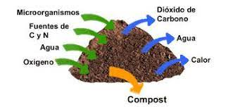
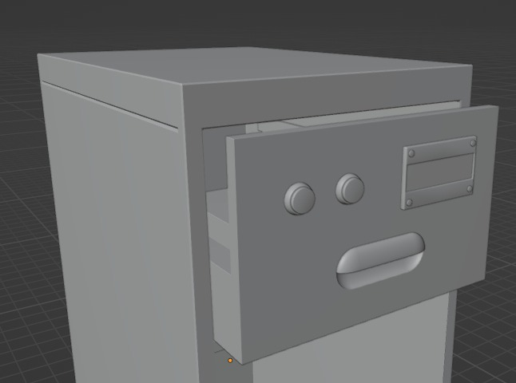
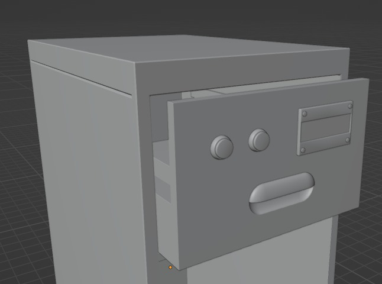
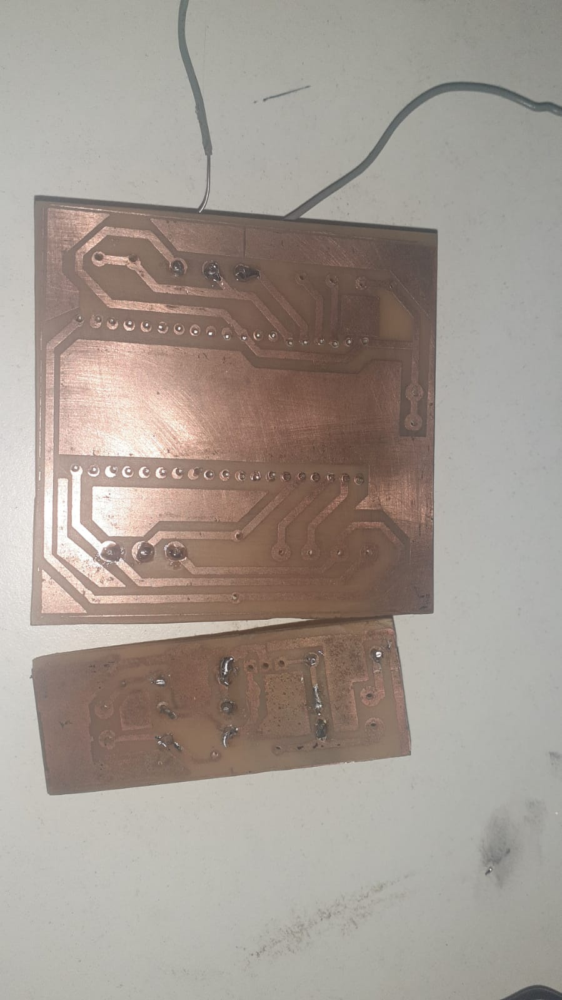
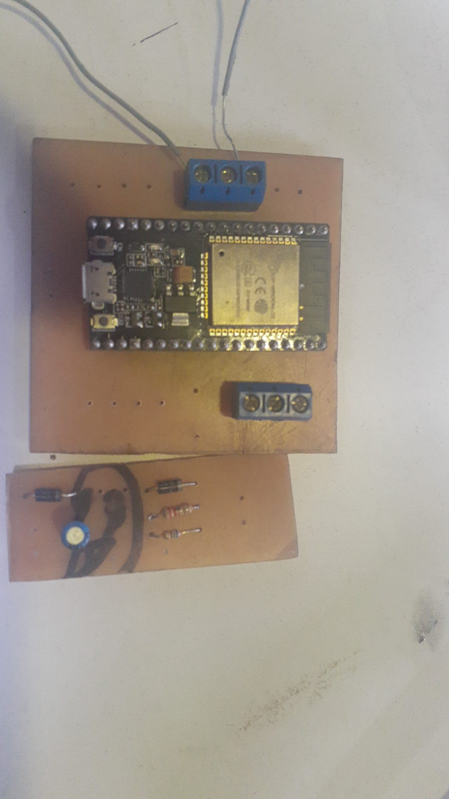
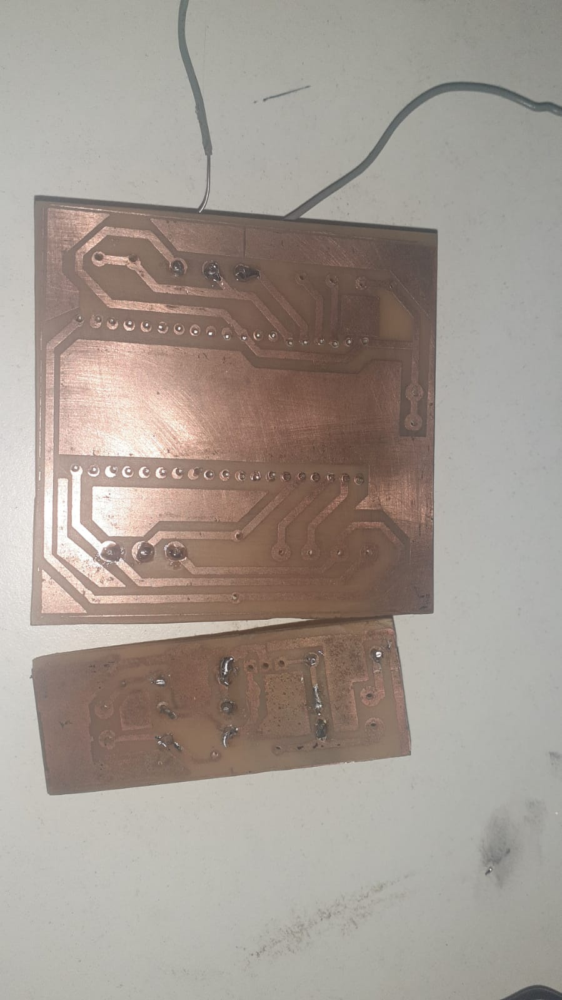
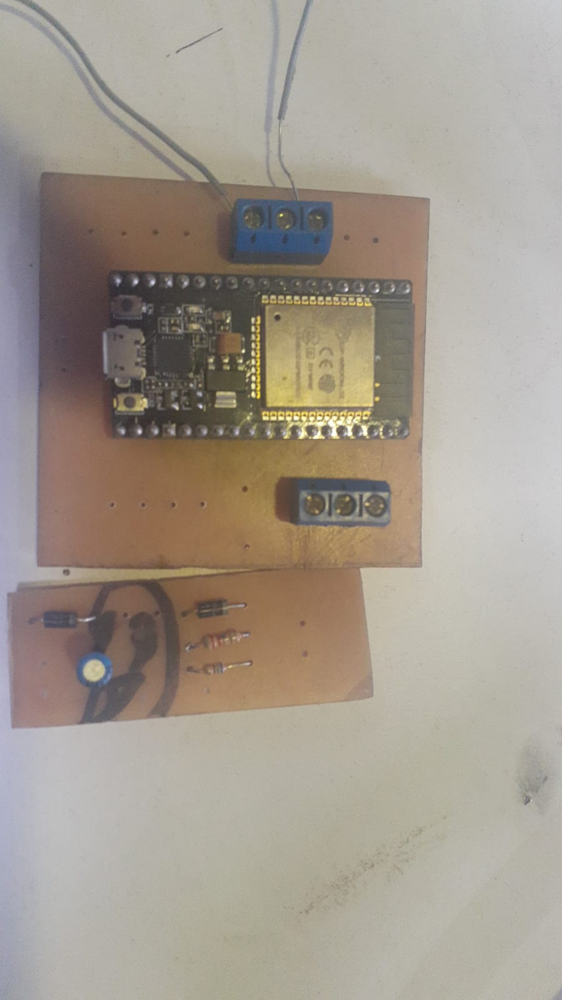

ESTE ES NUESTRO PROYECTO
Biodigestor inteligente alimentado por energias renovables
Quienes somos?
Somos alumnos de la escuela secundaria E.E.S.T. N°7 "IMPA" que cursan el 7° año y esta, es la presentacion de nuestro proyecto de fin de año.
Objetivo
Nuestro objetivo es aprovechar los residuos organicos para crear un sistema ciclico en el cual
estos residuos sean transformados en un bio combustible útil que tiene como finalidad, el contribuir a
reducciòn de la contiminaciòn producida del dia a dia.
Pensamos varias maneras de llevar a cabo esta idea, tambièn con el proposito de que sea "fàcil" para la persona
promedio el acceder y el contribuir a esta causa, de esta menera llegamos hasta B-GAS.
En què consiste B-GAS?
B-GAS, consiste en un "Biodigestor" que posee diferentes accesos, diferentes filtros, una toma de salida única de Gas, una salida de "Digestato"(sobrantes de bioresiduos), un panel solar que alimenta una bateria que funciona de fuente para una pantalla LCD que nos muestra los distintos parámetros del BioGas, sensores de presión y temperatura, botones interactivos, todo sobre una estructura de madera que funciona de contenedor para el biodigestor.
¿Cómo generamos el biogas?
A traves de un metodo anaerobico(siguiente imagen) :

Somos alumnos de la escuela secundaria E.E.S.T. N°7 "IMPA" que cursan el 7° año y esta, es la presentacion de nuestro proyecto de fin de año.
Nuestro objetivo es aprovechar los residuos organicos para crear un sistema ciclico en el cual
estos residuos sean transformados en un bio combustible útil que tiene como finalidad, el contribuir a
reducciòn de la contiminaciòn producida del dia a dia.
Pensamos varias maneras de llevar a cabo esta idea, tambièn con el proposito de que sea "fàcil" para la persona
promedio el acceder y el contribuir a esta causa, de esta menera llegamos hasta B-GAS.
B-GAS, consiste en un "Biodigestor" que posee diferentes accesos, diferentes filtros, una toma de salida única de Gas, una salida de "Digestato"(sobrantes de bioresiduos), un panel solar que alimenta una bateria que funciona de fuente para una pantalla LCD que nos muestra los distintos parámetros del BioGas, sensores de presión y temperatura, botones interactivos, todo sobre una estructura de madera que funciona de contenedor para el biodigestor.
.jpg)
.jpg) 

.jpg)
.jpg)
 


